Legend of Mushrom Database
Welcome to LoM DB, a lightweight, community-driven database for tracking and exploring merged servers, top players, and timelines across regions. This project is built to help players, analysts, and enthusiasts get a clearer view of evolving server data, elite players, and historical merges all in one place.
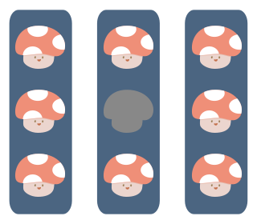
Event Calendar
A centralized calendar that tracks current and upcoming game events, collaborations, updates, and server merges. It provides a chronological view of key changes and limited-time activities, helping players and observers understand how the game ecosystem evolves over time.
Timeline
A comprehensive and intuitive visual overview of all server merges that have occurred in Legend of Mushroom. This timeline consolidates every known merge event into a single, easy-to-navigate table. Each entry includes details like merge date, servers involved, and regional context—helping users track the evolution of the server landscape at a glance.
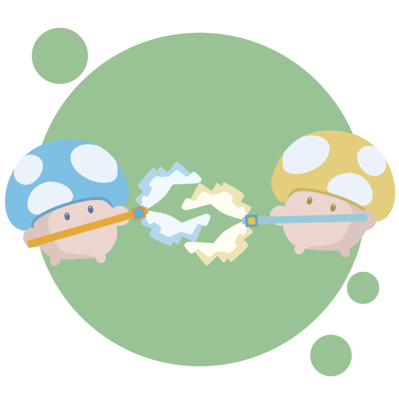
Player Leaderboard
A leaderboard that tracks the highest-level players across all servers. It showcases top progression milestones over time, making it easier to compare player growth, and observe long-term leveling trends within and across servers.
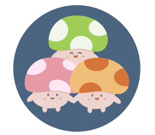
Player List
A focused list of players tracked in the project’s dedicated player database. This list contributes additional context to both the Timeline and Merges View. It highlights selected players across servers, enabling further insights into server populations or notable player movements over time.
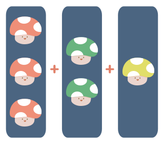
Merges
A detailed table displaying the same merge information as the public spreadsheet, enhanced with language filters to tailor the view by region or localization. This view is especially useful for cross-referencing and double-checking data between the internal project database and the shared community spreadsheet. Ideal for those who want a deeper, verified look at the data source.
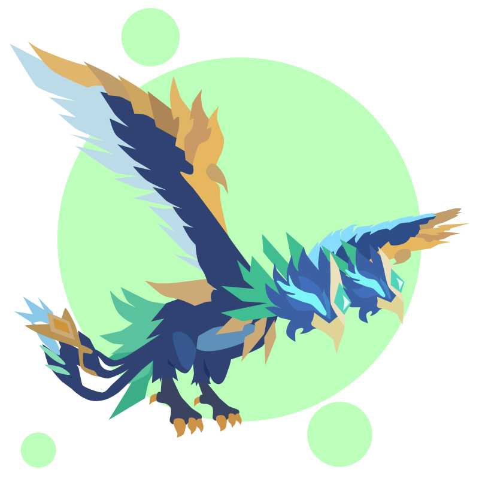
Mount List
A visual overview of all mounts and their availability across different regions. Easily filterable by name or region, this section is designed to help players quickly spot version differences, track regional releases, and plan collections accordingly. Ideal for those comparing content rollout or verifying which mounts are currently accessible in their server.
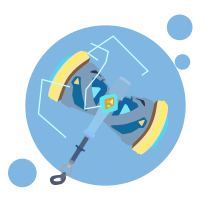
Artifact List
A comprehensive view of all artifacts and their distribution across regions. This section allows for easy filtering by name helping players identify release patterns, spot region-exclusive items, and monitor availability over time. Perfect for collectors or anyone tracking content progression.
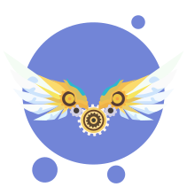
Back Accesory List
An organized showcase of all back accessories and their availability in different regions. With intuitive filters by name, this section helps players recognize rollout trends, uncover region-specific items, and keep track of collection goals. Especially useful for those monitoring updates.
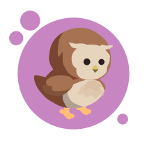
Avian List
A curated collection of all avian companions and their regional availability. Easily filterable by name, this section highlights version differences and exclusive releases. Ideal for players tracking their winged companions or comparing region-specific updates.
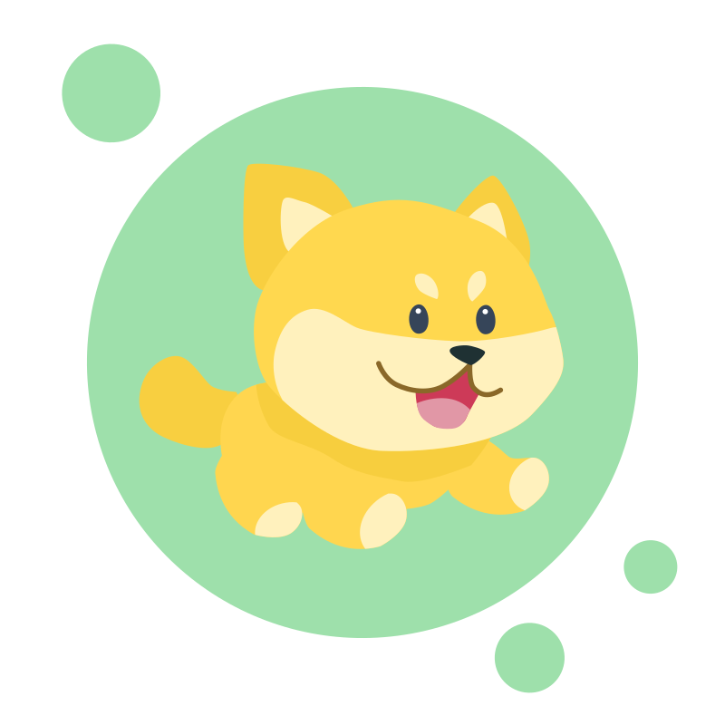
Pal List
A comprehensive index of every pal and their unique skills across regions. With simple filtering by name, this catalog makes it easy to spot variations between versions and discover region-exclusive companions. Perfect for players aiming to complete their collection or keep track of localized differences.
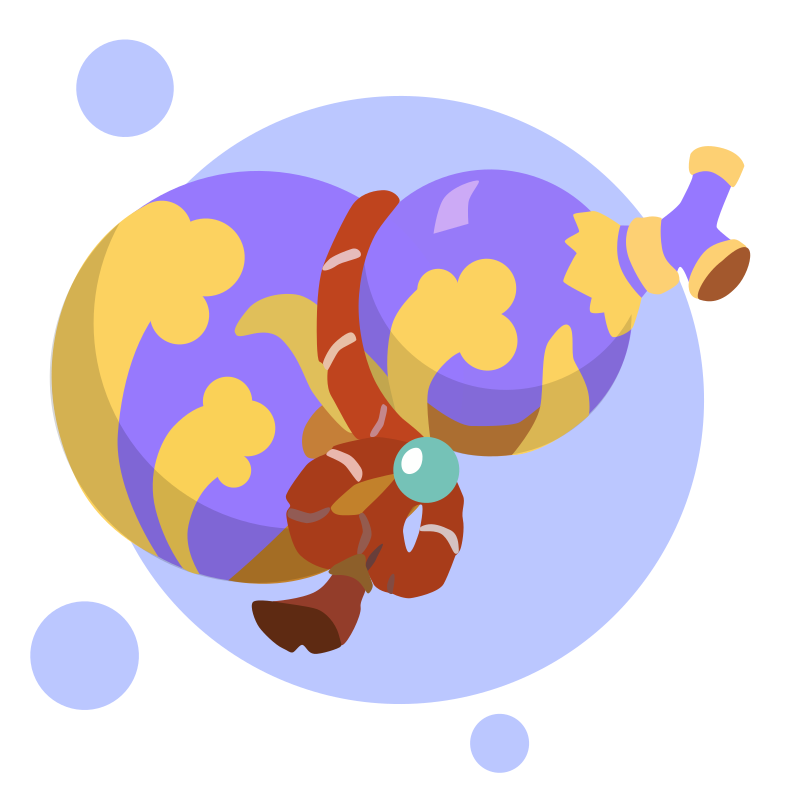
Mount Calculator
An interactive tool designed to calculate the exact number of pink gems and clockwinders required to reach a chosen mount level. Featuring clear input controls and dynamic results, it helps players plan their progression efficiently. This calculator is ideal for those aiming to optimize resource usage and avoid over- or under-investing while leveling up their mounts.
Community
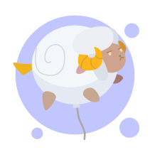
Shroom Chronicles
-
Player Interviews -
Live Chat -
English -
Youtube Channel
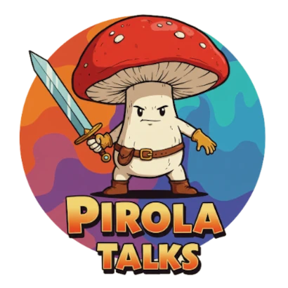
Pirola Talks
-
Player Guides -
Live Chat -
Portuguese -
Youtube Channel
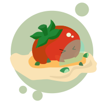
AhkTaar Prime
-
Player Guides -
Live Chat -
English -
Youtube Channel
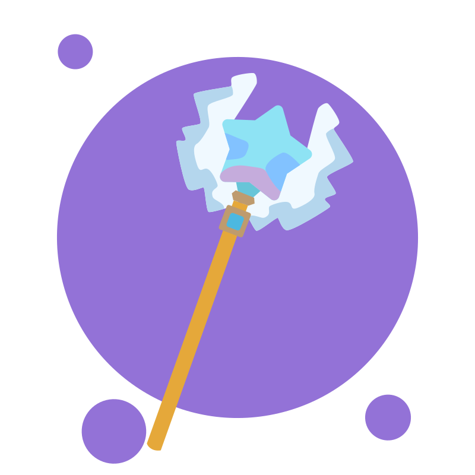
LoM DB
-
Behind The Scenes -
Player Guides -
English -
Youtube Channel
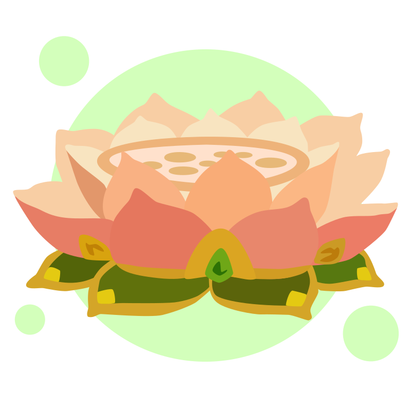
Neechan
-
Player Guides -
News -
Portuguese -
Website
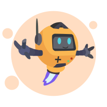
Theria Games
-
Player Guides -
News -
English -
Website
LoM Guide
-
Player Guides -
News -
English -
Website
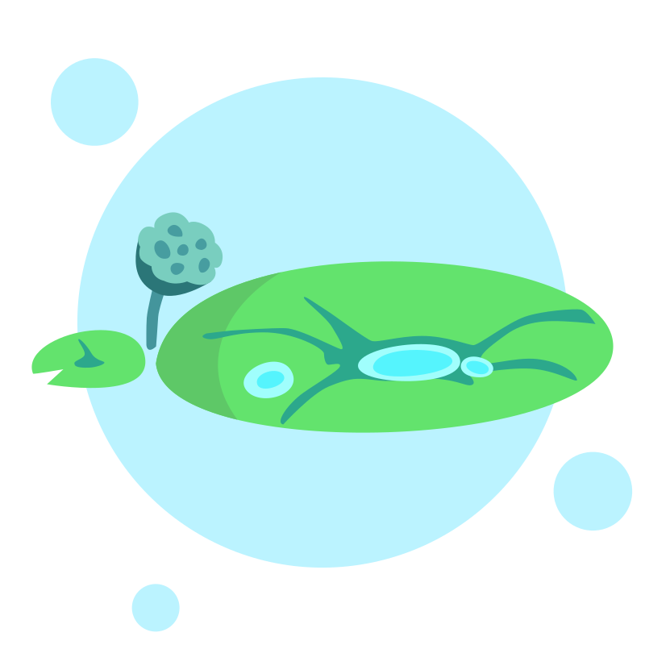
NoobShroom
-
Player Guides -
News -
English -
Website
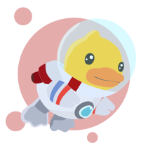
Bird's LoM Lab
-
LoM Calculators -
--- -
English -
Website
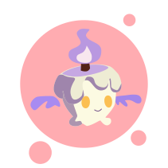
LoM Guides by Grace
-
Player Guides -
--- -
English -
Website